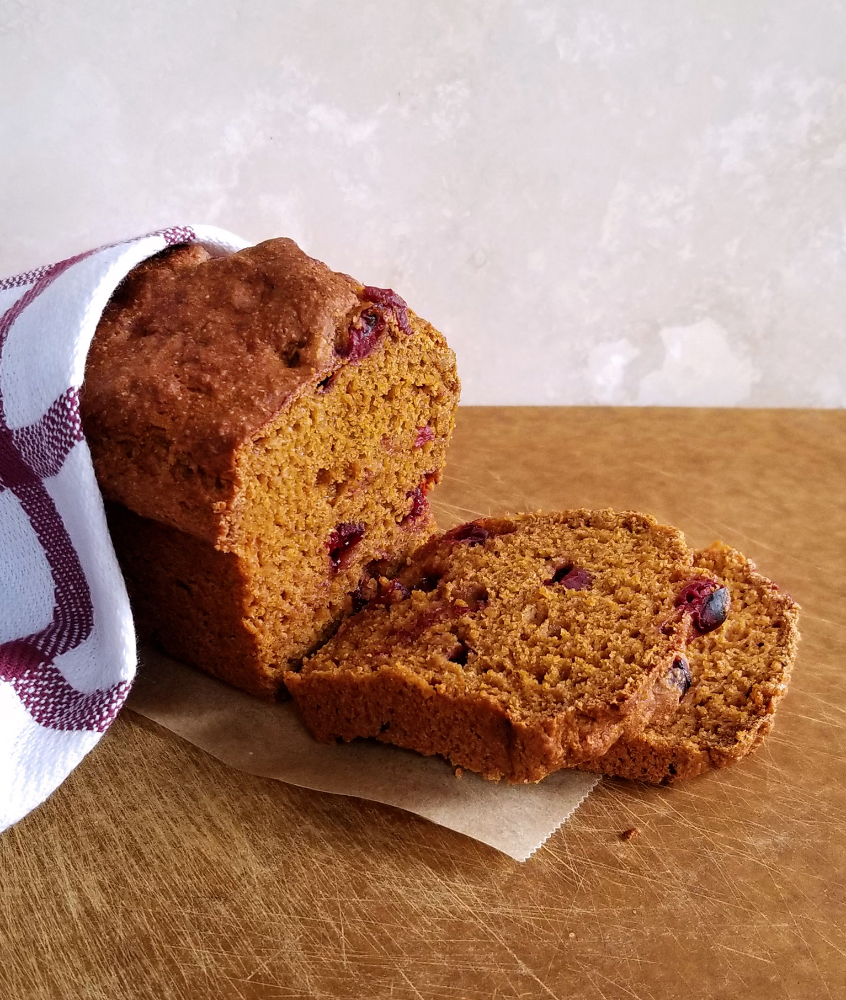
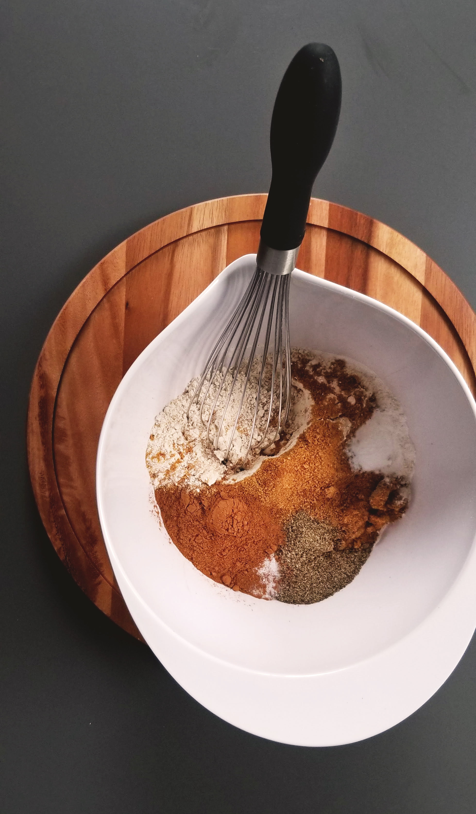

Directions
Preheat oven to 350°F. Combine the flour, pumpkin pie spice, baking soda, and salt in a large bowl.
Bread
Then, combine the sugar, pure pumpkin, eggs, oil, and juice in a small bowl. Beat until just blended. Add the pumpkin mixture to the flour. Fold in the cranberries.
Separate into five loaf pans that are 5x5x3 inches. Bake at 350 degrees for 50 to 55 minutes.

Ingredients